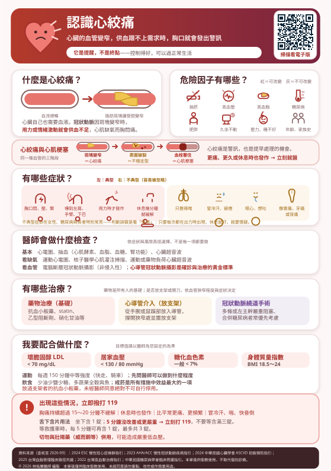

胸口悶、像被壓住，走快一點就發作、休息一下又好了——這是心臟在跟你說：它的血不夠用了。
這一頁說明心絞痛是怎麼來的、要做哪些檢查、有哪些治療，以及你自己每天要配合做什麼。
本頁有表格，在手機上若看不到完整欄位，請用手指在表格區域左右滑動即可看到全部內容。
心臟是一顆幫浦，一天要跳十萬次。它辛苦工作，自己也需要血液供應——負責這件事的，就是包在心臟表面的冠狀動脈。
問題出在：如果冠狀動脈因為脂肪斑塊堆積而變窄，平時休息可能還夠用，但只要爬樓梯、快走、提重物、天氣很冷或情緒激動，心臟需要更多血的時候，供應就跟不上了。心肌暫時缺氧，就會發出「胸口悶痛」的警訊。這就是心絞痛。
因為休息時心臟的需求降下來了，狹窄的血管勉強還供應得上。所以典型的心絞痛是：活動時發作 → 停下來休息幾分鐘 → 緩解。這個「一動就痛、一停就好」的規律，是醫師判斷的重要線索。
心絞痛是血管「變窄」、心肌暫時缺氧，休息或含藥後會緩解，心肌還沒壞死。
心肌梗塞是斑塊破裂、血塊把血管整個堵死，心肌開始壞死。這時休息不會好、含藥也壓不下來，痛會持續超過 15～20 分鐘，常合併冒冷汗、喘、噁心。這是急症，要立刻打 119。
很多人以為這是兩種不同的病。其實它們是同一條血管、同一個問題的不同階段——差別在於血管窄到什麼程度，以及斑塊有沒有破掉。
| 階段 | 血管發生什麼事 | 你會感覺到什麼 | 心肌 |
|---|---|---|---|
| 穩定型心絞痛 | 斑塊讓血管慢慢變窄，但表面完整 | 用力時胸悶，休息或含藥會緩解；每次發作的誘因與程度都差不多 | 暫時缺氧，沒有壞死 |
| 不穩定型心絞痛 | 斑塊表面破裂，血小板聚集形成部分血栓 | 更痛、更久、更頻繁，休息時也發作，含藥效果變差 | 嚴重缺氧，還沒明顯壞死 |
| 心肌梗塞 | 血栓把血管大部分或完全塞死 | 持續劇痛超過 15～20 分鐘，合併冒冷汗、喘、噁心，休息與含藥都無效 | 心肌開始壞死，而且不可逆 |
最窄的地方，不一定是最危險的地方。
這解釋了兩件很多人想不通的事：
分成兩類看比較清楚：能改變的（這些就是治療的重點）和不能改變的（沒辦法，但知道了可以更警覺）。
| 因子 | 說明 |
|---|---|
| 年齡 | 男性 ≥ 45 歲、女性 ≥ 55 歲，風險開始明顯上升 |
| 性別 | 男性較早發生；女性停經後風險快速追上，而且症狀更常不典型 |
| 早發性冠心病家族史 | 父親或兄弟 < 55 歲、母親或姊妹 < 65 歲發生冠心病 |
| 慢性腎臟病 | 本身就是心血管疾病的高風險族群 |
上面「可以改變」的那七項，每一項改善都能實際降低心肌梗塞的機會。這些不是醫師隨口叮嚀，而是有大型研究支持、效益明確的措施——尤其是戒菸。
| 特徵 | 說明 |
|---|---|
| 是什麼感覺 | 悶、壓、緊、重——像被大石頭壓住、被繩子綑住。通常不是尖銳的刺痛，也很少能用一根手指指出確切的點 |
| 在哪裡 | 胸骨後方或左前胸為主，可傳到左肩、左手臂內側、下巴、牙齒、脖子、上腹或背部 |
| 什麼時候發作 | 用力、爬樓梯、快走、提重物、天冷、吃太飽、情緒激動時 |
| 持續多久 | 通常 2～10 分鐘。休息或含舌下含片後會緩解 |
| 不太像心絞痛的 | 只持續幾秒鐘的刺痛、用手一壓就更痛、隨呼吸或姿勢改變而明顯變化——這些比較可能是其他原因，但仍建議讓醫師判斷 |
有些人完全不覺得「痛」，只是：喘、異常疲倦、冒冷汗、噁心想吐、心悸、頭暈，或是被當成胃痛、牙痛、背痛、肩頸痠痛。
特別常見於：女性、糖尿病患者、長者。糖尿病久了神經感覺會變鈍，可能發生「無痛性心肌缺氧」，等到發現時已經是心肌梗塞。
判斷的訣竅是看「情境」而不是「痛不痛」：如果這個不舒服每次都在出力時出現、休息就好，就要高度懷疑。
不是每一項都要做。醫師會先依您的症狀、年齡、性別與危險因子估算「這有多可能是冠心病」，再決定往下查到哪裡。
| 檢查 | 怎麼做 | 適合誰 |
|---|---|---|
| 運動心電圖 | 在跑步機上邊走邊記錄心電圖，看用力時會不會出現缺氧變化 | 能走得動、心電圖基礎正常者 |
| 核子醫學心肌灌注掃描 | 注射微量顯影藥，比較休息時與負荷時心肌的血流分布 | 不方便運動，或需要知道缺氧範圍大小者 |
| 負荷心臟超音波 | 運動或給藥讓心跳加快，用超音波看心肌活動有沒有變差 | 不想接受輻射者 |
| 檢查 | 特點 | 要注意 |
|---|---|---|
| 電腦斷層冠狀動脈攝影 （CTA） | 非侵入性，打顯影劑後照電腦斷層，可看出血管有沒有狹窄與鈣化 | 需打顯影劑，腎功能不好或顯影劑過敏要先評估；心跳太快或鈣化太嚴重時影像品質會下降 |
| 心導管冠狀動脈攝影 | 確診的黃金標準。從手腕或鼠蹊部的動脈放入導管，直接打顯影劑看血管 | 屬侵入性；但優點是發現嚴重狹窄可以同次放支架處理 |
因為心導管是侵入性檢查，有它自己的風險。指引的原則是先用非侵入性的方式評估可能性與缺氧範圍，當結果顯示風險高、或症狀用藥物控制不住時，再進一步做心導管。這是為了避免不必要的侵入性檢查，不是消極。
藥物治療是每一個人的基礎，不是「沒辦法開刀才吃的東西」。
放支架或繞道手術處理的是「這一段」特別窄的血管，能改善症狀；但讓斑塊不再繼續長、減少未來心肌梗塞的機會，靠的是藥物與生活控制。所以就算放了支架，藥還是要吃、生活還是要改。
| 做法 | 主要目的 | 誰比較適合 | 要知道的限制 |
|---|---|---|---|
| 藥物治療 | 減少發作、降低未來心肌梗塞與死亡的風險 | 所有人，不論有沒有放支架 | 要長期規律服用；擅自停藥風險很高 |
| 心導管介入（支架） | 撐開嚴重狹窄，改善症狀 | 症狀用藥物控制不住，或檢查顯示缺氧範圍大、風險高者 | 只處理放支架的那一段；術後需嚴格服用抗血小板藥；支架處仍可能再狹窄 |
| 冠狀動脈繞道手術 | 繞過阻塞，重建血流 | 左主幹嚴重阻塞、三條血管都有嚴重病變，特別是合併糖尿病或心臟功能較差者 | 屬開心手術，恢復期較長；但對特定族群長期效益較佳 |
很多人拿到一袋藥卻不知道各自的用途，吃著吃著就自己減了。這裡把常見的幾類講清楚。
| 藥物類別 | 它在做什麼 | 常見副作用 |
|---|---|---|
| 抗血小板藥 阿斯匹靈、clopidogrel、ticagrelor 等 | 讓血小板不容易黏在一起，防止斑塊破裂時形成血栓把血管堵死 | 容易瘀青、牙齦或腸胃出血。有黑便、血便、嚴重瘀青要回診 |
| Statin（史他汀） | 降 LDL，更重要的是讓斑塊變穩定、不容易破裂。這是減少心肌梗塞最關鍵的一類 | 少數肌肉痠痛、肝指數上升。詳見認識膽固醇 |
| 乙型阻斷劑 | 讓心跳慢一點、收縮力和緩一點，心臟的耗氧就降低，比較不會缺氧 | 疲倦、手腳冰冷、心跳偏慢。不可突然停藥（心跳可能反彈） |
| 鈣離子阻斷劑 | 放鬆血管、降低血壓；部分種類也能減少冠狀動脈痙攣 | 腳踝水腫、臉部潮紅、頭痛、便秘 |
| 長效硝酸鹽 | 擴張血管、降低心臟負擔，預防發作 | 頭痛（常隨時間改善）、頭暈。需要有「空窗期」避免產生耐受性，用法依醫師指示 |
| 舌下硝化甘油 | 發作當下快速緩解，見第 8 節 | 頭痛、臉紅、頭暈。含的時候要坐著 |
| ACEI／ARB | 控制血壓、保護心臟與腎臟，特別是合併高血壓、糖尿病或心功能下降者 | ACEI 可能引起乾咳（可換成 ARB）；需追蹤腎功能與鉀離子 |
雙重抗血小板治療（通常是阿斯匹靈＋另一種）絕對不可以自行停用。支架在血管內皮長好之前，一旦停藥可能形成支架內血栓，這是會致命的急症。
要拔牙、做胃鏡大腸鏡、或任何手術前，請先回心臟科問過，由醫師決定能不能停、停幾天。不要讓其他科醫師在不知情的狀況下叫您停藥——請主動說「我有放支架，正在吃抗血小板藥」。
這是心絞痛病人身上最該隨身攜帶的一顆藥。用對了能快速緩解，用錯了反而危險。
您可能在藥袋說明或網路上看過另一種講法：「含滿三錠、過了 15 分鐘還不好，再叫救護車」。這是比較早期、依藥品仿單的寫法。
現行的心臟學會建議把叫救護車的時機提前：含下第一錠之後過 5 分鐘沒有改善、或反而更嚴重，就立刻打 119，不要等到含完三錠。因為如果是心肌梗塞，那十分鐘的差別，就是能救回多少心肌的差別。
三錠的上限沒有改變——打完電話、等救護車的時候，仍然可以每 5 分鐘再含 1 錠，最多共 3 錠。
硝化甘油與威而鋼（sildenafil）、犀利士（tadalafil）、樂威壯（vardenafil）等藥物併用，會造成嚴重且難以挽回的低血壓，可能致命。
一般建議：服用 sildenafil 或 vardenafil 後至少間隔 24 小時、tadalafil 後至少間隔 48 小時，才可以使用硝化甘油。如果您有在用這類藥物，務必主動告訴醫師——這不是害羞的問題，是安全問題。急診也一定要說。
湯與火鍋湯底（鈉極高）、滷味與醬料、加工肉品（香腸、臘肉、火腿）、手搖飲、鹹酥雞與酥皮點心。外食時可以請店家醬料另外放、少鹽少油，湯少喝或不喝。
不要自己憑感覺開始運動。請先讓醫師依您的檢查結果，告訴您可以做到什麼強度；如果有做過運動測試，醫師能給出更明確的心跳上限。有些醫院有心臟復健課程，在監測下運動最安全，值得詢問。
對冠心病患者而言，戒菸帶來的心血管效益大於任何單一種藥物。抽菸會讓血管收縮、內皮受損、斑塊更容易破裂，也會讓 HDL 下降。
戒不掉不是意志力的問題。台灣各醫院與診所都有戒菸門診，有藥物與衛教支持，成功率比自己硬戒高很多，健保也有補助。二手菸同樣有害，請家人一起配合。
下面是已經確診冠心病者的一般目標。實際數字請以醫師為您設定的為準——有些人會更嚴格，有些人（例如高齡、多重共病）會放寬。
| 項目 | 一般目標 | 怎麼做到 |
|---|---|---|
| 壞膽固醇 LDL | < 70 mg/dL （極高風險者 < 55） | Statin 為主，不夠時加 ezetimibe 或 PCSK9 抑制劑。這是減少心肌梗塞最關鍵的一項 |
| 血壓 | 居家 < 130 / 80 mmHg | 規律服藥＋減鹽＋運動＋控制體重。在家量並記錄，比診間的數字更能反映真實情況 |
| 糖化血色素（有糖尿病者） | 一般 < 7% | 依醫師安排的藥物與飲食控制。年長或有低血糖風險者目標可放寬 |
| 體重 | BMI 18.5～24 | 體重減 5～10% 就能看到血壓、血糖、血脂同時改善 |
| 腰圍 | 男性 < 90 公分 女性 < 80 公分 | 腹部脂肪與心血管風險的關係比體重更密切 |
| 運動 | 每週 150 分鐘中等強度 | 先經醫師評估；循序漸進 |
| 抽菸 | 完全戒除 | 善用戒菸門診；避免二手菸 |
建議準備一本小冊子或用手機記錄每天的血壓與心跳，回診時帶去。醫師看到的是「一整段時間的趨勢」，遠比在診間量到的單一個數字有用。有量血糖的人同樣照做。
救護車上就能做心電圖、給氧氣、必要時當場給藥，而且會直接送到有能力做心導管的醫院。自己開車在路上發作，反而更危險。
穩定的心絞痛，通常每次發作的誘因、程度與持續時間都差不多。一旦出現更痛、更久、更頻繁，或休息時也發作，代表斑塊可能變得不穩定，是不穩定型心絞痛——這屬於急性冠心症候群的範疇，需要盡快就醫評估，不能等。
沒有。支架處理的是「那一段」特別窄的血管，其他地方的斑塊還在，而且還會繼續長。真正能減少未來心肌梗塞的，是藥物與生活控制。很多人放完支架覺得不痛了就鬆懈，這是最可惜的情況。
有可能。現代的塗藥支架再狹窄率已經低很多，但仍有機會。最能降低這個風險的，就是按時吃抗血小板藥與 statin、控制好血壓血糖、戒菸。如果再度出現熟悉的胸悶痛，請回診評估。
多數情況是長期服用。這和高血壓一樣，是在控制風險而不是治癒疾病。抗血小板藥的種類與期間（例如雙重抗血小板要吃多久）由醫師依支架種類、出血風險個別決定；statin 則通常長期使用。任何停藥都要經過醫師。
控制良好的人通常可以，而且規律運動有好處。但強度要先經醫師評估（見第 9 節）。原則是：避免突然的劇烈用力（例如搬重物時憋氣）、天冷時做好保暖、隨身帶舌下含片、不要獨自從事高風險活動。
一般而言，如果您可以不喘地走上兩層樓梯，通常就能承受性行為的負荷。但務必記得：正在用硝化甘油的人絕對不能使用壯陽藥（見第 8 節）。如果有這方面的需求或困擾，請直接和醫師討論，有其他安全的處理方式。
症狀穩定者通常可以。但剛做完心導管或手術後、或症狀不穩定時，請依醫師指示暫停開車。長途飛行前建議先回診評估，並把藥（含舌下含片）放在隨身行李，不要託運。
低溫會讓血管收縮、血壓上升、心臟負擔加重，所以冬天清晨是心血管事件的高峰。建議：起床後先在床上坐一下再下床、室內先暖身、出門戴帽子口罩圍巾、避免一大早在戶外劇烈運動、洗澡水不要過熱且浴室先預熱。
需要。沒有症狀不代表血管沒有繼續變化，而且血脂、血壓、血糖與藥物副作用都需要定期抽血追蹤。回診的目的是「在事情發生之前調整」，不是等有症狀才處理。
本頁內容依下列臨床指引編寫，並針對台灣一般民眾的用語與就醫情境改寫（查核至 2026 年 9 月）：
本頁為一般衛教資訊，不能取代個別診療。文中的目標數字為一般建議值，每個人的年齡、共病、用藥與出血風險都不同，實際目標與治療方式請以您的主治醫師評估為準。本頁不提供任何藥物劑量建議。
若出現胸痛持續超過 15～20 分鐘不緩解、休息時發作、合併冒冷汗或嚴重呼吸困難，請立即撥打 119。
